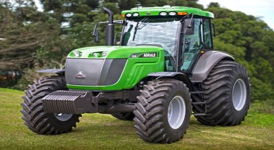
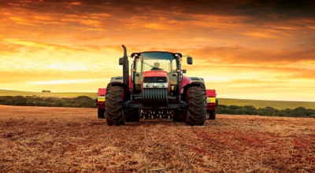
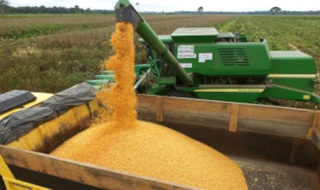

PlantWeb
Início
Sobre
Sair

Trator elétrico desenvolvido na Unioeste promove tecnologia sustentável no campo

Tecnologia presente em tratores é referência para carros

Tecnologias agrícolas: o presente e o futuro do agronegócio